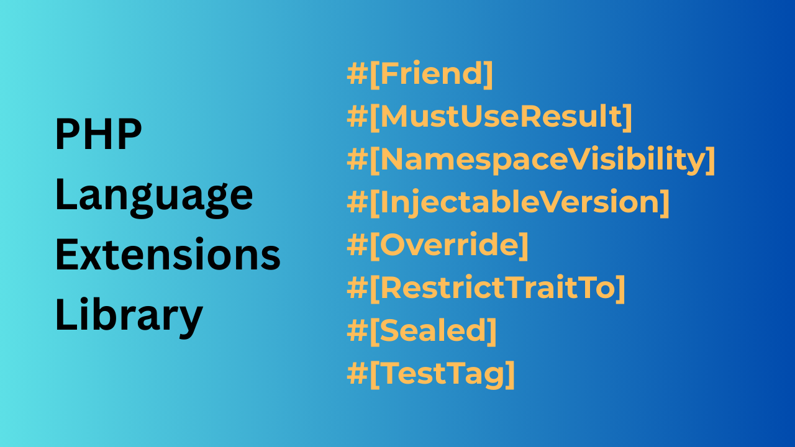

September 19th 2025

Have you ever had an idea about how to improve PHP? Or maybe you yearn for a feature that another language has, that hasn’t made it into PHP yet?
If you’re really keen on an idea, then you can suggest it gets implemented via PHP’s RFC process.
The RFC is, rightly, a long process with plenty of checks and balances in place. This level of rigour is important; once a feature has been added to the language it's going to be there for years, if not decades so it is must be right.
The good news is that, for certain features, there is a quicker way to add them to the language.
Imagine you have some code that does something that is, relatively, quite slow.
In one of my projects an example is sending an SMS. There is a TextMessageSender class. Behind the scenes this class makes an HTTP call to send an SMS, as it's an HTTP call, it might need to be retried.
Typically work like this is best done by a queue system.
Instead of application code calling TextMessageSender directly, it would put a message on a job queue (a quick process), and then get on with whatever else it needed to do.
A queue processor, let's call it TextMessageQueueProcessor would call TextMesssageSender.
It would be great to enforce that methods in TextMesssageSender could only be called by TextMessageQueueProcessor and not by any other code.
Unfortunately PHP's visibility modifiers (public, protected and private are not fine-grained enough for this).
Some languages, such at C++, have a concept of "friends". A method or states that they are “friends” with another class. The method can only be called from the class it is friends with.
In our example we'd say that TextMesssageSender's friend is TextMessageQueueProcessor.
This would mean that only TextMessageQueueProcessor could call methods in TextMesssageSender.
Advanced static analysis tools like PHPStan and Psalm analyse your codebase. These tools have a set of rules they run over the codebase they are analysing. They report any violations of the rules.
Typically, you’d run static analysis tools on your codebase at the very least as part of your CI. Ideally, you’d run them as part of your workflow, before committing and pushing code.
As well as all the predefined rules provided by the static analysis tools, it is also possible to create custom rules. One such custom rule could enforce “friend” visibility.
Assuming we have a suitable custom rule to emulate friend functionality, we still need a way of telling the custom rule who is friends with whom. This is a great use-case for PHP attributes.
To add the friend functionality, two things are required:
#[Friend] attribute that can be applied to a method.Back to our example, the code would look like this:
#[Friend(TextMessageQueueProcessor::class)]
class TextMessageSender
{
// Methods
}
The friend relationship is enforced not by PHP itself, but by a static analysis tool running custom rules.
If you want to use this (and other new functionality) on your code, then look up PHP language extension library and the PHPStan extension.
Attributes + static analysis = new language features
We can emulate new language features using static analysis custom rules. Where additional information is required, this is provided via PHP Attributes.
Instead of relying on new features being added to the PHP language itself via the RFC process, we run static analysers with the custom rules on the codebase to enforce new language features.
One major benefit of this approach is the speed new language features can be created. Once up to speed with writing custom rules, features like #Friend can be made in an afternoon.
There is more flexibility to tweak the behaviour of the feature, once it actually is in a codebase. Contrast this with the RFC process, where it is important to get the feature right the first time. There is an argument that all features that could be implemented via static analysis, should be, at least initially. This allows it to get battle-tested in the real world and all the issues ironed out before it is finally added to the language via an RFC.
There are a couple of drawbacks:
Firstly you have to be running static analysis on your codebase. I’d argue that you should be doing this anyway, as it is so valuable. But if you’re creating libraries, there is no way to force your users to run static analysis.
Secondly, this technique is not suitable for all features, e.g. it is not possible to change the syntax of the language.
Static analysers, like Psalm and PHPStan, are up there with PHPUnit and Composer, as some of the greatest tools in the PHP ecosystem.
Hopefully, you’ve seen how static analysis tools running custom rules, can be used to create new PHP language features. What new language features would you like?